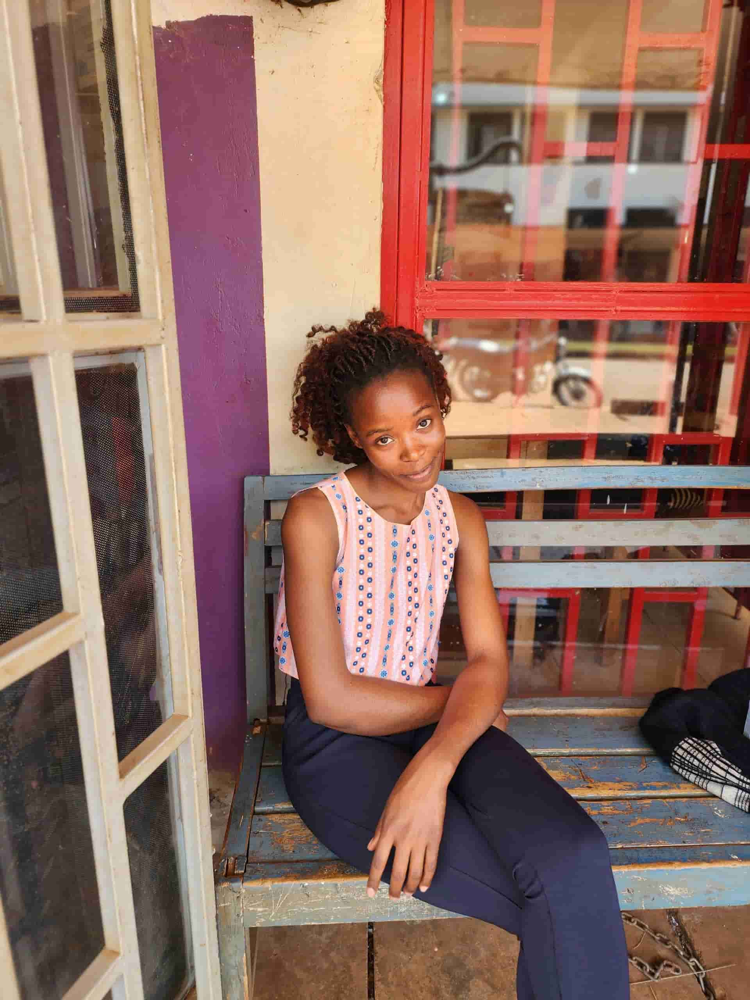

KITIIBWA HARRIET
About Me
My name is Kitiibwa Harriet. I hold a Diploma in Information Technology and currently work with Sizomu Technology Services in Jinja, Uganda. I am 23 years old and pursuing a Bachelor's degree in Software Development at Brigham Young University–Idaho. I am passionate about technology and committed to growing my skills as a developer. Through this course, I aim to strengthen my web development abilities and build a strong foundation for a successful career in the tech industry.
My Goals
As a software developer, my primary goal is to create innovative, efficient, and user-friendly applications that solve real-world problems. I am especially interested in web and mobile development, and I aspire to work on projects that have a meaningful impact in my community and beyond. In the long term, I aim to become a full-stack developer and eventually lead development teams in building scalable software solutions. Through continuous learning, hands-on experience, and collaboration, I hope to grow both technically and professionally, contributing positively to the evolving world of technology.